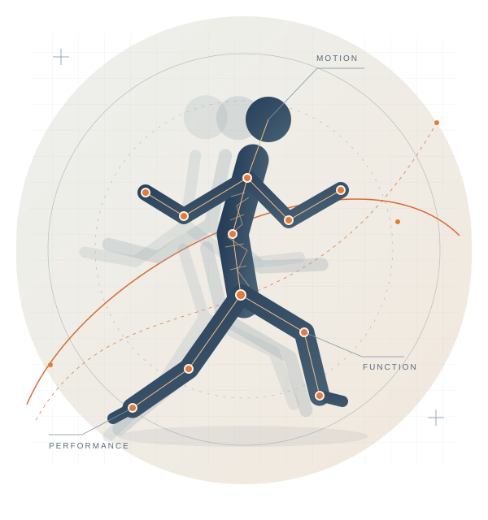
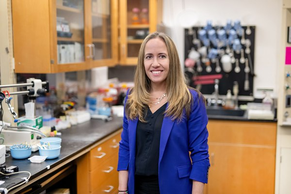
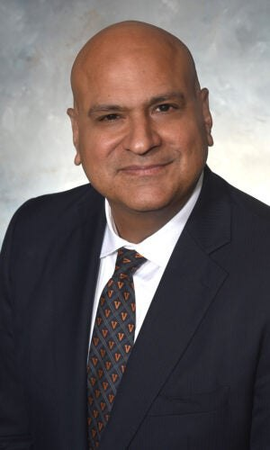
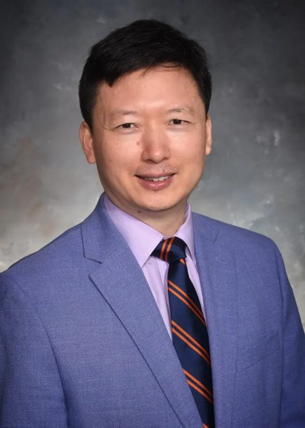
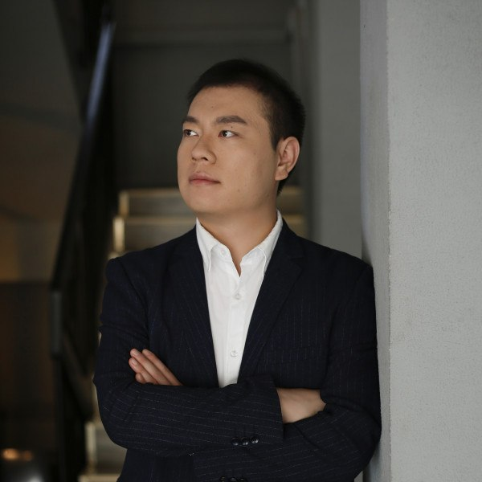
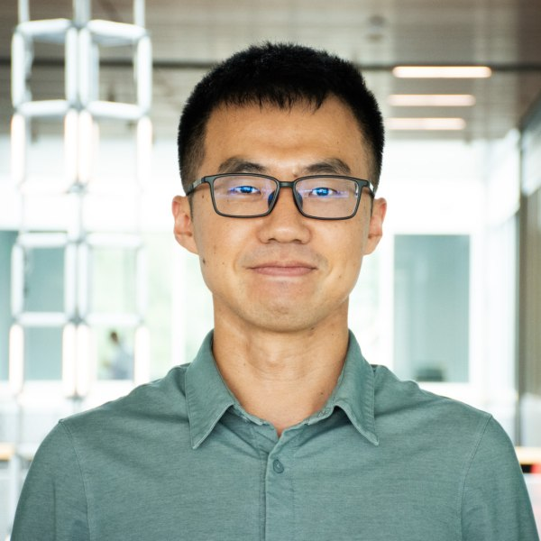
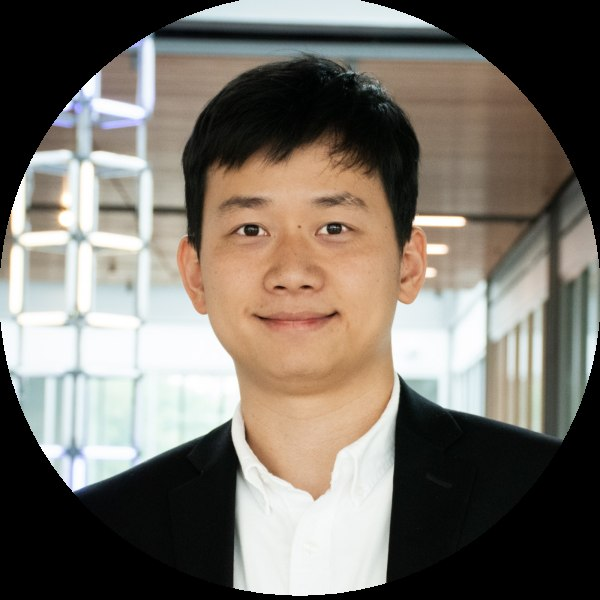

Measure & understand
Integrate motion capture, wearable sensing, imaging, and physiological measurements to examine how people move, function, and adapt.
Center for Human Motion and Performance
Connecting science, technology, and practice to better understand how people move and turn that understanding into better decisions.
An interdisciplinary Research Hub at the University of Virginia

Kinesiology / Data science / Engineering / Medicine
01 / Our purpose
CHAMP brings together researchers and practitioners to advance the science of human motion and performance.
As a University of Virginia Research Hub, we connect expertise in biomechanics, physiology, medicine, data science, multimodal sensing, and computational modeling. Our work links measurements of movement and physiological function with models that explain variation, track change, and inform predictions. We study questions spanning health, injury prevention, rehabilitation, and performance.
Our goal is to translate these insights into useful tools and more personalized, data-informed decisions for clinicians, coaches, and other practitioners. Potential defense applications include assessing physical readiness and supporting injury prevention and rehabilitation for military personnel.
Explore UVA Research Hubs02 / Our science
Connecting what we measure with how we model and how we act.
Integrate motion capture, wearable sensing, imaging, and physiological measurements to examine how people move, function, and adapt.
Connect computational biomechanics, physiology, computer vision, and machine learning to investigate mechanisms and develop individualized predictions.
Develop and evaluate approaches that support decisions in injury prevention, rehabilitation, and human performance, in clinical and performance settings.
How does movement change with injury, recovery, and aging? What can measurements tell us about underlying function? How can better models support better decisions?
03 / Our community
Meet the researchers and practitioners bringing complementary perspectives to CHAMP.






No members match your search. Try another name or school.
04 / Coming together
Conversations and collaborations that move the science forward.
Upcoming CHAMP events will be posted here as dates and details are confirmed.
Connect with hub leadershipBuild with us
Interested in joining CHAMP, exploring a research collaboration, or connecting your organization with our community? Reach out to our co-chairs.